Sound isolation
Apple Sound Analysis detects canine vocal events among everyday sounds, separating a bark or howl from the rest of the room.
INPUT · MICROPHONE / LOCAL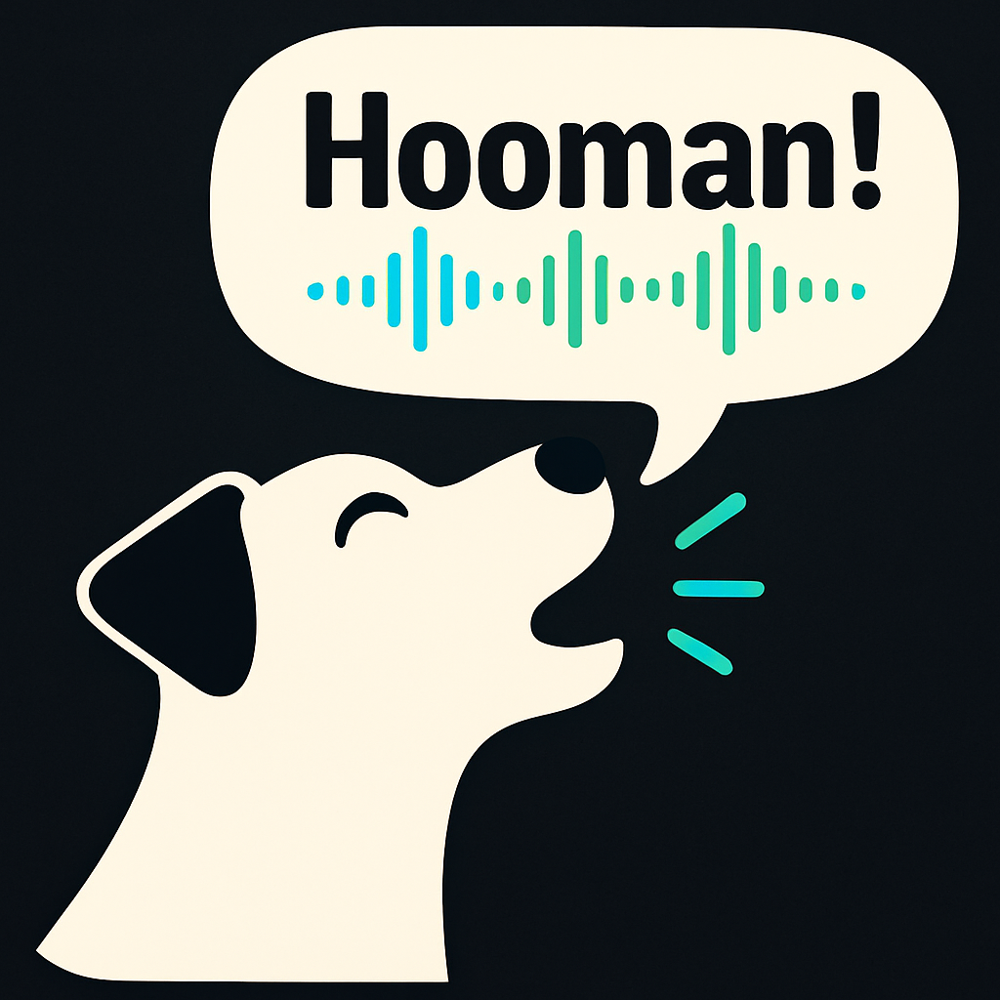
OVERBARK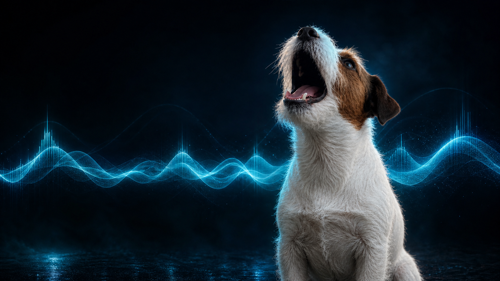
LIVE CANINE INTERPRETATION · ON DEVICE
Point your iPhone or iPad at your dog. Overbark reads bark acoustics, posture and the scene—then turns the moment into a running comic conversation.
$4.99 once. No subscription. No account. Ever.
01 · LIVE DISPATCH
Not a random caption. A live read of the moment—bark bubbles and quiet thoughts, stacked beside the dog and time-stamped to the scene.
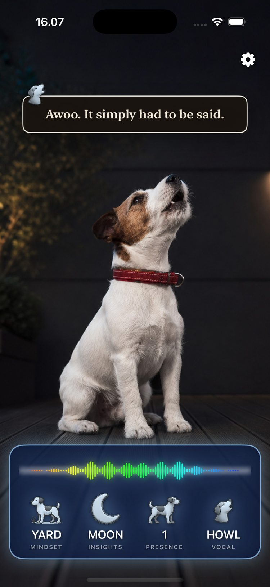
02 · THE ON-DEVICE SIGNAL PATH
Six local stages turn live camera and microphone signals into a scene-aware transcript. Every stage is real signal processing. The conclusion it reaches about your dog is not admissible anywhere.
Apple Sound Analysis detects canine vocal events among everyday sounds, separating a bark or howl from the rest of the room.
INPUT · MICROPHONE / LOCALAccelerate/vDSP performs FFT audio frequency analysis, scoring pitch, spectral character, intensity and inter-bark tempo.
FFT · vDSP / FRAME BUFFERApple Vision follows body landmarks across frames, reading posture and movement without saving the camera feed.
POSE · TEMPORAL TRACKINGAn on-device, scene-aware classifier recognizes situational cues—a walk, beach, meal, yard, car ride, rest, bird or doorbell.
SCENE · OBJECT + AMBIENT AUDIOThe Vision and audio models run on Apple’s Neural Engine; their outputs—plus motion and scene—are reconciled locally into a single, confident interpretation of the moment.
ON-DEVICE INFERENCE · NEURAL ENGINEThe local dialogue engine composes thought-chains and bark lines from an authored vocabulary. New bubbles arrive; older thoughts rise and fade.
NO GENERATIVE AI · NO NETWORKCONTEXT ENGINE
A bark never arrives alone. Overbark combines what it hears with what Vision sees and how the device is moving. The same vocal pattern can become a different line on a walk, beside a dinner bowl, in the car or under a suspiciously occupied sunbeam.
This is not a random-caption dispenser. A scene-aware state machine assembles each line locally from an authored vocabulary, maintains conversational continuity and gives each dog its own column. Everything happens in the moment, on-device—no network round trip, no cloud delay and no external processing between what Overbark observes and what appears on screen.
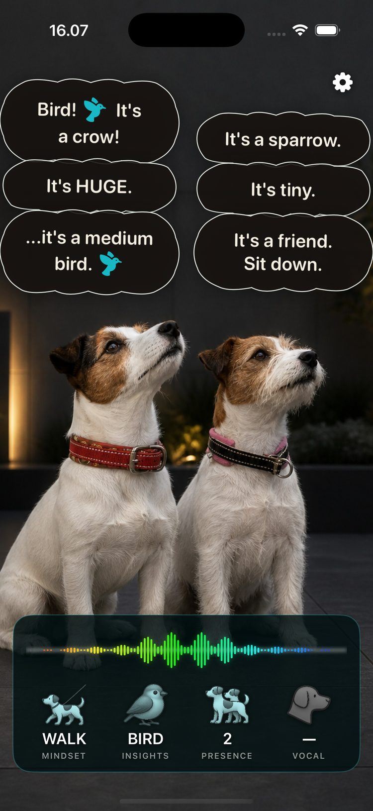
UP TO 2 DOGS03 · PACK DYNAMICS
Overbark tracks both dogs in frame, gives each a side-by-side column and lets their personalities collide. One calls it a crow. The other insists it is a sparrow.
When one dog is missing, the other can wonder where they went—by name.
Works on iPhone and iPad, portrait or landscape.
04 · LOCAL AI, PROVABLY
Overbark uses Apple’s on-device Vision, Sound Analysis and optional Speech frameworks, accelerated by the Neural Engine. They process the live moment where it happens: inside your iPhone or iPad.
No prompt is sent anywhere, and no language model writes a word. The thoughts and barks are formed at runtime by Overbark’s on-device vocabulary engine — real language, assembled to fit the exact moment, entirely on your phone.
Camera, microphone, motion and optional speech input are evaluated live, never uploaded, never used for training and not retained after the moment.
Turn off every radio and nothing changes — the same detection, analysis, interface and dialogs keep working. There’s no server to reach, and no network to need. Everything happens in device.
Nothing about you, your voice, your dog or your home is stored or sent. There is no ChatGPT, Claude, Gemini, Apple Intelligence, Private Cloud Compute or any other cloud LLM involved. Read the privacy policy ↗
05 · OBSERVATION DECK
The app’s real symbols, decoded. The apparatus is calibrated. The dialogue is not.
The active scene lens: walk, beach, meal, rest, car ride, yard and more.
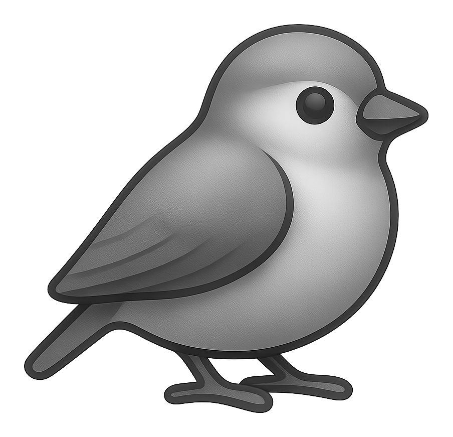
BIRDINSIGHTSThe object or event currently prioritized by scene and ambient-audio classification.
The number of dogs Apple Vision is actively following across camera frames.
The detected vocal pattern; quiet thoughts remain distinct from audible barks.
06 · DIRECTOR'S CONTROLS
Seven local control surfaces let you tune the interface, input channels and each dog’s conversational rhythm.
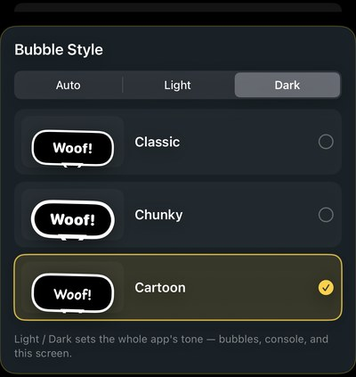
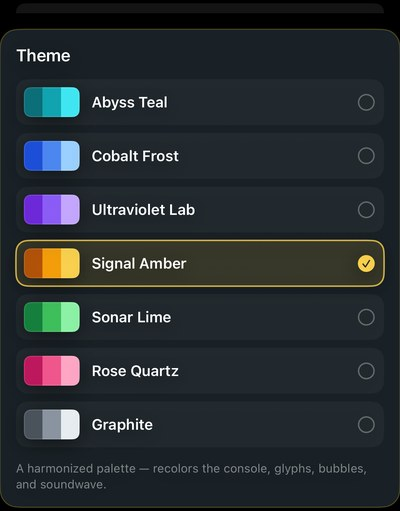
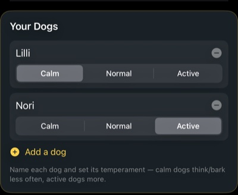
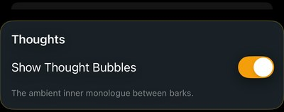
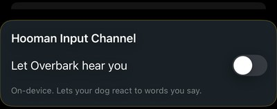
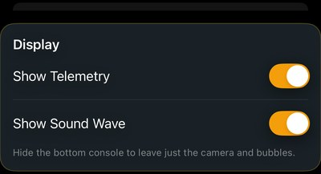
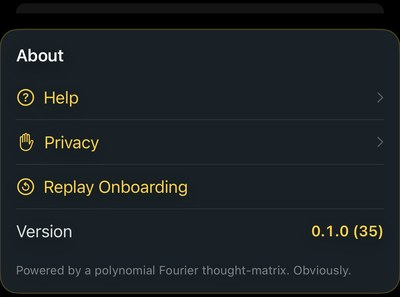
07 · METHODOLOGY
Peer-reviewed bioacoustics research shows that listeners can infer emotional tenor from acoustic qualities such as pitch, tonality and rhythm. Overbark uses those measurable properties—along with Apple’s on-device Sound Analysis, Vision, Speech and Neural Engine frameworks—to build a richer read of the moment.
That does not make it a literal translator. The app detects patterns, posture and context, then selects a fitting joke from authored dialogue. It is an entertainment instrument with a technically honest signal path, not a claim that canine language has been decoded.
Overbark is an independent entertainment app, not affiliated with or endorsed by any researcher or institution. The dog denies everything. The dialogue is authored comedy, not anyone’s scientific findings.
THE DOG IS READY TO MAKE A STATEMENT.